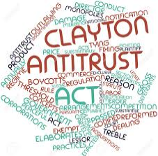
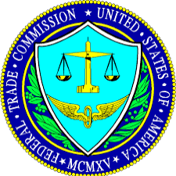
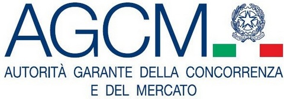

ORIGINI DELL'ANTITRUST
Le origini del diritto antitrust sono essenzialmente anglo-americane.
Benchè introdotte per la prima volta in Canada, con l'approvazione nel 1889 delle leggi contro gli accordi restrittivi della concorrenza, le origini del diritto antitrust vengono comunemente fatte risalire allo Sherman Antitrust Act, la prima legge antitrust, emanata dal Congresso degli Stati Uniti su proposta del senatore dell'Ohio John Sherman nel 1890, ma concretamente applicata solo nel 1911 contro l'impero petrolifero creato dal magnate John Davison Rockefeller e contro l'American Tobacco Company.
Prima di tale legge, alcuni Stati della federazione degli Stati Uniti avevano adottato atti a tutela del solo commercio interno a ciascuno di essi.
Il governo degli Stati Uniti utilizza le leggi antitrust per limitare il potere di mercato esercitato dalle imprese e per controllarne il comportamento. Le leggi antitrust non considerano a priori illegale il monopolio, ma controllano come le imprese ottengono e conservano il potere di mercato.
TRE PRINCIPALI NORMATIVE
Le tre principali normative che disciplinano la politica antitrust negli Stati Uniti sono lo Sherman Act (approvato nel 1890), il Clayton Act (1914) e il Federal Trade Commission Act (1914).
Nel corso degli anni sono state effettuate aggiunte, stralci ed emendamenti a queste leggi.
Anche prima dell'approvazione dello Sherman Act, però, vigevano principi giuridici che regolavano la concorrenza tra le imprese.
In base alla common law (ossia ai precedenti fondati sulle decisioni delle corti in mancanza di leggi esplicite), gli accordi tra imprese per la fissazione dei prezzi, anche se non illegali, non erano vincolanti giuridicamente: le autorità competenti non avrebbero consentito l'attuazione di un contratto in cui un'impresa
stipulava un accordo con un rivale per fissare i prezzi.
Quando fu approvato lo Sherman Act, si formarono negli Stati Uniti mediante fusioni imprese di grandi dimensioni, in grado di realizzare economie di scala.
Lo Sherman Act, la prima normativa antitrust degli Stati Uniti, rappresentava in parte una reazione a questi cambiamenti dell'economia statunitense.
La Prima Sezione dello Sherman Act vieta i cartelli espliciti, affermando che ogni contratto, ogni associazione in forma di trust o in altra forma, ogni cospirazione che limiti la concorrenza tra i vari stati [degli Stati Uniti] o con le nazioni straniere è dichiarata illegale.
La Seconda Sezione stabilisce che ogni persona che monopolizzerà o tenterà di monopolizzare, o si associerà per cospirare con una o più persone per monopolizzare qualsiasi aspetto del commercio tra i vari stati [degli Stati Uniti] verrà ritenuta colpevole di un reato grave.
Per quanto si possa interpretare la Seconda Sezione come divieto del monopolio, di fatto però le autorità ne hanno fornito un'interpretazione diversa. Ovvero che non costituisce reato formare un monopolio finchè il monopolista non commette àazioni riprovevoli.
L'interpretazione dello Sherman Act data inizialmente dai tribunali lasciava dubbi sul fatto che la legge vietasse certi comportamenti. Di conseguenza, nel 1914, i legislatori approvarono due ulteriori normative antitrust, il Clayton Act e il Federal Trade Commission Act.
Il Clayton Act mira principalmente a combattere quattro prassi specifiche:
- Impedisce la discriminazione dei prezzi
- Vieta l'utilizzo di vendite abbinate di due o più beni e i monopoli locali che determinano una riduzione della concorrenza
- Proibisce le fusioni che limitano la concorrenza.
- Partecipazione delle stesse persone nei consigli di amministrazione di società diverse(pratica che rende possibile il controllo di imprese concorrenti tramite consigli di amministrazione incrociati).
Il Clayton Act consente inoltre alla parte lesa di ottenere un risarcimento pari al triplo dei danni effettivamente subiti oltre agli onorari degli avvocati.

Il Federal Trade Commission Act creò una nuova agenzia governativa, la Federal Trade Commission (FTC), che, oltre a svolgere altre attività, vigila sull'applicazione delle leggi antitrust e giudica le controversie di sua competenza.
La principale disposizione del Federal Trade Commission Act è contenuta nella Quinta Sezione, che vieta le forme di concorrenza "sleale". Rientra tra le responsabilità della FTC la protezione del consumatore e la prevenzione della pubblicità ingannevole.

Anche l'Italia si adegua alle normative dell'antitrust internazioneli e ha istituito l'Autorità garante della concorrenza e del mercato.
L'autorità è composta da 3 componenti, uno è il Presidente.
Il presidente e le altre autorita sono nominati dai Presidenti di camera e senato, ciascuno dura in carica 7 anni non rinnovabili.
L'Autorità in tali casi può procedere ad istruttorie o indagini conoscitive, che possono concludersi con una diffida o una sanzione amministrativa.
Nei procedimenti avviati per presunte violazioni della disciplina in materia di concorrenza, le sanzioni possono arrivare sino al 10% del fatturato dell'impresa.
In caso di violazioni della normativa posta a tutela del consumatore, l'Autorità può irrogare sanzioni fino ad un massimo edittale di 500.000 euro. Qualora ravvisi particolari situazioni di necessità e urgenza, l'Autorità può emettere, inoltre, provvedimenti cautelari per la tutela di interessi generali.

La Apple nel 2011 è stata multata per essere responsabile di pratiche commerciali scorrette a danno dei consumatori, sansione che ammonta a 900mila euro.
Decisione dell'Antitrust al termine di un'istruttoria che ha riscontrato la non piena applicazione ai consumatori, da parte delle società del gruppo Apple operanti in Italia, della garanzia legale biennale a carico del venditore, e informazioni poco chiare sugli ambiti di copertura dei servizi di assistenza aggiuntiva a pagamento offerti da Apple ai consumatori.
Secondo quanto ricostruito dagli uffici dell'Antitrust, anche alla luce di numerose segnalazioni arrivate dai consumatori e da alcune associazioni, le tre società del gruppo, Apple Sales International, Apple Italia S.r.l. e Apple Retail Italia hanno messo in atto due distinte pratiche commerciali scorrette.
La prima riguarda il fatto che nei punti vendita e siti internet apple.com e store.apple.com non informavano in modo adeguato i consumatori sui diritti di assistenza gratuita biennale previsti dal Codice del Consumo, ostacolando l'esercizio degli stessi e limitandosi a riconoscere la garanzia convenzionale del produttore di un anno.
Inoltre, le informazioni date su natura, contenuto e durata dei servizi di assistenza aggiuntivi a pagamento AppleCare Protection Plan, unite ai mancati chiarimenti sull'esistenza della garanzia legale biennale, erano tali da indurre i consumatori a sottoscrivere un contratto aggiuntivo quando la "copertura" del servizio a pagamento si sovrappone in parte alla garanzia legale gratuita prevista dal Codice del Consumo.
Le sanzioni sono pari a 400mila euro per la prima pratica e di 500mila per la seconda.